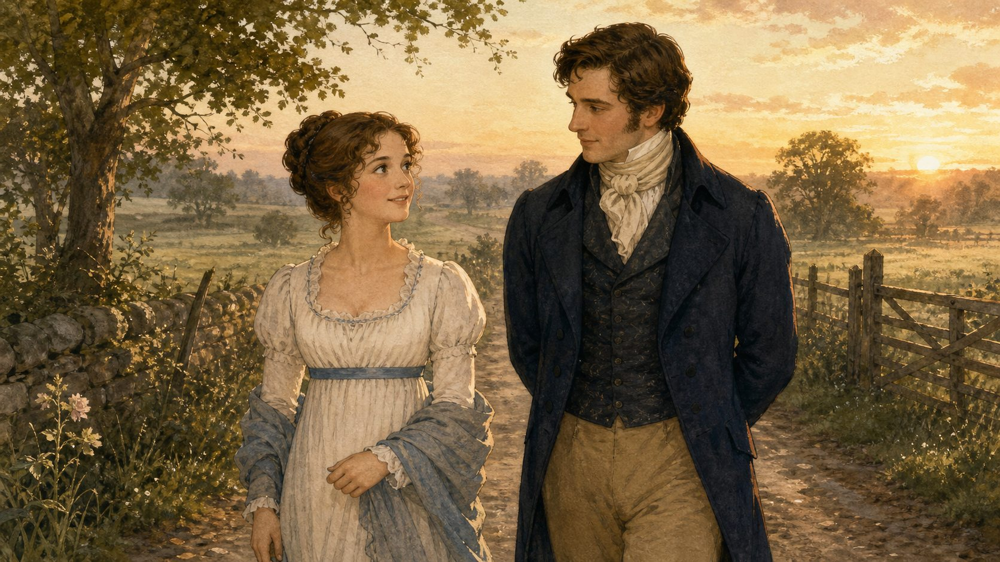
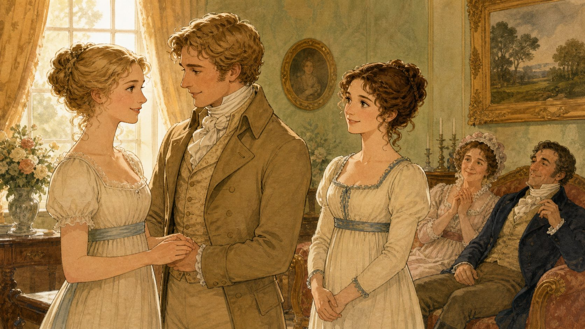
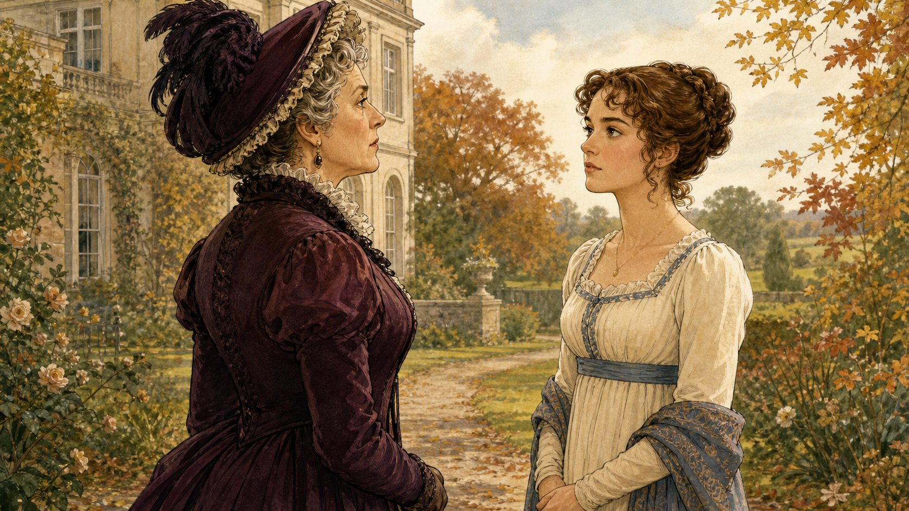

행복을 만든
선택을 찾아라!
숨은 도움, 흔들리지 않는 선택, 달라진 두 사람의 마지막 고백. 말보다 행동을 살피며 이야기의 결말을 완성합니다.
편지 뒤, 무엇이 달라졌을까?
5~7장에서 엘리자베스의 판단이 흔들리기 시작했습니다.
거절된 청혼
엘리자베스는 다아시의 무례한 태도와 자신이 믿었던 잘못들을 지적하며 청혼을 거절했습니다.
한 통의 편지
다아시의 설명을 읽은 엘리자베스는 위컴의 거짓과 자신의 성급한 판단을 깨닫기 시작했습니다.
가족의 위기
리디아가 위컴과 달아나자 엘리자베스는 가족의 미래가 무너질까 걱정했습니다.
다아시가 떠난 뒤에도 그의 편지와 행동은 엘리자베스의 판단을 계속 바꾸고 있었습니다.
결말을 읽는 세 가지 렌즈
사건을 많이 외우기보다, 주인공의 선택과 변화를 추적합니다.
말보다 행동
누가 무엇을 실제로 했는지 확인합니다.
압박보다 선택
다른 사람의 요구와 자신의 결정을 구별합니다.
첫인상보다 변화
새 증거를 보고 판단을 고쳤는지 살핍니다.
엘리자베스와 다아시는 어떻게 서로를 바꾸지 않고도 더 나은 사람이 되었을까요?
숨은 도움과 돌아온 진심
사건을 하나씩 열어 엘리자베스의 판단이 바뀌는 흐름을 따라가세요.

다아시가 숨긴 행동은?
한 문항씩 풀며 엘리자베스가 새롭게 알게 된 사실을 확인하세요.
같은 결혼, 다른 선택
리디아와 제인의 결혼은 과정과 책임이 어떻게 달랐을까요?
리디아와 위컴
충동적으로 달아난 뒤, 빚과 가족의 평판을 수습하기 위해 서둘러 결혼합니다.
제인과 빙리
헤어진 시간을 지나 다시 만나, 서로의 진심을 직접 확인하고 결혼을 약속합니다.
누가 내 미래를 정하는가
캐서린 부인의 압박 앞에서 엘리자베스가 지킨 것을 찾아보세요.

사실일까, 압박일까?
문장을 하나씩 보고 ‘확인된 사실·압박·자기 결정’으로 구별하세요.
단호하지만 존중 있게
엘리자베스의 말에서 건강한 경계 세우기를 찾아보세요.
두 번째 고백은 달랐다
서로의 마음을 강요하지 않는 마지막 대화를 따라가세요.
누가, 어떻게 달라졌을까?
행복한 결말을 만든 것은 운이 아니라 두 사람의 변화였습니다.
엘리자베스
첫인상을 고집하지 않고 편지와 행동을 살펴 자신의 판단을 고쳤습니다.
다아시
지위를 내세우는 태도를 돌아보고 배려와 책임 있는 행동으로 진심을 보였습니다.
행동이 결말을 바꾼 순서
주인공 중심의 다섯 사건을 하나씩 열어 원인과 결과를 연결하세요.
다아시가 리디아와 위컴의 결혼 문제를 조용히 해결한다.
엘리자베스가 다아시의 숨은 도움을 알게 된다.
캐서린 부인이 결혼을 막으려 하지만 엘리자베스가 약속을 거절한다.
다아시가 다시 진심을 묻고, 엘리자베스가 달라진 마음을 전한다.
두 사람은 서로의 변화를 인정하고 결혼을 약속한다.
관계는 어떻게 달라졌을까?
인물 토큰을 눌러 결말에서의 관계와 변화를 확인하세요.
오만과 편견, 마지막 수사 기록
이야기의 결말을 만든 세 가지를 확인하고 나만의 문장으로 정리하세요.
행복은 우연히 오지 않았습니다.
엘리자베스는 편견을 고칠 용기를 냈고, 다아시는 오만을 행동으로 바꾸었습니다. 두 사람은 상대의 선택을 존중하며 함께 행복을 만들었습니다.
결말의 핵심 세 가지
내가 찾은 작품의 메시지
작품: 《오만과 편견》 · 원작 Jane Austen, Pride and Prejudice (1813, public domain) · 한국어 수업 구성과 삽화: 자체 제작 · 아동 학습용으로 요약·각색함.